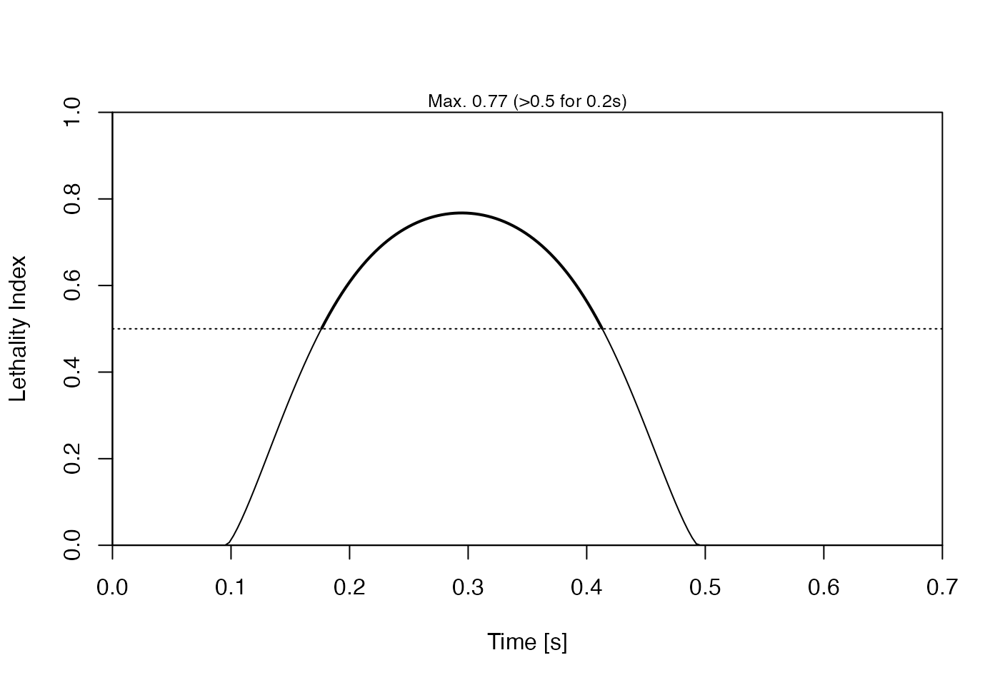

Creates displays of various results of a simulation performed
with strike().
An object created by strike().
A character vector that indicates what to plot. This choices for its entries are listed below, in no particular order.
"location" for a time-series plot of boat location xw in
dashed black, whale centerline xs in solid gray,
blubber-interior interface in red, and skin in blue. The maximum
acceleration of ship and whale (in "g" units) are indicated in notes
placed near the horizontal axes. Those acceleration indications report
just a single value for each of ship and whale, but if the blubber
and sublayer have been squeezed to their limits, yielding a short and
intense force spike as the bone compresses, then the summaries will
also report on the spike duration and intensity. The spike is computed
based on using runmed() on the acceleration data, with a
k value that is set to correspond to 5 ms, or to k=11, whichever
is larger.
"section" to plot skin thickness, blubber thickness and sublayer thickness
in one panel, creating a cross-section diagram.
"threat" a stacked plot showing time-series traces of an
ad-hoc measure of the possible threat to skin, blubber and sublayer.
The threat level is computed as the ratio
of stress to ultimate strength, e.g. for blubber, it is
x$WCF$stress/x$parms$s[2]. The same vertical scale is used in
each of the subpanels that make up the stack. Any values exceeding
10 are clipped to 10, and in such a case the overall label on the vertical
axis will note this clipping, although it should be easy to see, because
the way it most often occurs is if the soft layers "bottom out" onto
the bone, which yields a short period of very high stress, owing to the
very high compression modulus of bone. Each of the curves is filled in with a light
gray colour for stress/strength values up to 1, and with black
for higher values; this makes it easy to tell at a glance whether the
threat level is high.
"whale acceleration" for a time-series plot of whale acceleration.
"blubber thickness" for a time-series plot of blubber thickness.
"sublayer thickness" for a time-series plot of the thickness
of the layer interior to the blubber.
"reactive forces" for a time-series showing the reactive
forces associated with skin stretching (solid) and the compression of the
blubber and sublayer components (dashed).
"compression stress" for a time-series plot of the compression stress on the blubber
and the layer to its interior. (These stresses are equal, under an equilibrium assumption.)
"skin stress" for a time-series of skin stress in the along-skin y and z directions.
"lethality index" for a time-series of Lethality Index, computed from compression stress
using lethalityIndexFromStress(). Values of Lethality Index that exceed 0.5 are highlighted,
and a dotted line is drawn at that value.
"values" for a listing of param values.
"all" for all of the above.
"default" for a three-element plot showing "location",
"section", and "threat".
Logical, indicating whether to draw lines for some events, such as the moment of closest approach.
Colour used to indicate the whale centre.
Colour used to indicate the interface between whale blubber and sublayer.
Colour used to indicate the whale skin.
As colw, but the colour to be used for the ship bow location,
which is drawn with a dashed line.
a 4-element colour specification used in "threat" plots.
The colour transitions depend on the layer being plotted.
For skin and bone (i.e. in the bottom and top subpanels of the plot),
the first colour is used up to a stress:strength ratio
of 1/4, the second up to 1/2, the third up to 3/4, and the fourth above
3/4. For blubber and sublayer (i.e. the second and third subpanels,
counting from the bottom), the colours are defined by comparing compressive
stress to the values of tau25, tau50 and tau75 (see the parameters()
documentation), with the first colour for stress under tau25, the second
for stress up to tau50, the third for stress up to tau75, and the fourth
for higher stresses.
Line width used in plots for time intervals in which damage criteria are not exceeded.
Factor by which to thicken lines during times during which damage criteria are exceeded.
Integer indicating debugging level, 0 for quiet operation and higher values for more verbose monitoring of progress through the function.
Ignored.
See whalestrike() for a list of references.
# 1. default 3-panel plot
t <- seq(0, 0.7, length.out = 200)
state <- c(xs = -2, vs = knot2mps(12), xw = 0, vw = 0) # 12 knot ship
parms <- parameters() # default values
sol <- strike(t, state, parms)
par(mar = c(3, 3, 1, 1), mgp = c(2, 0.7, 0), mfrow = c(1, 3))
plot(sol)

# 2. all 12 plot types
par(mar = c(3, 3, 1, 1), mgp = c(2, 0.7, 0), mfrow = c(4, 3))
plot(sol, "all")